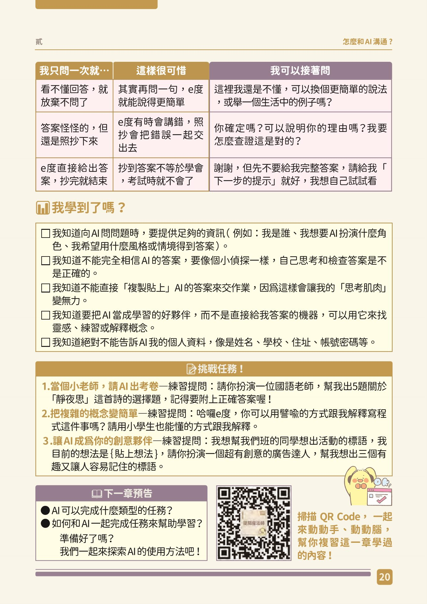
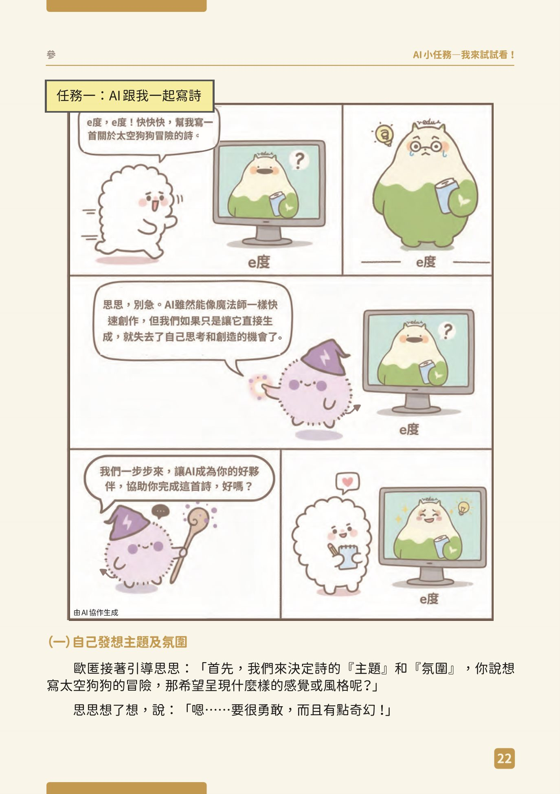
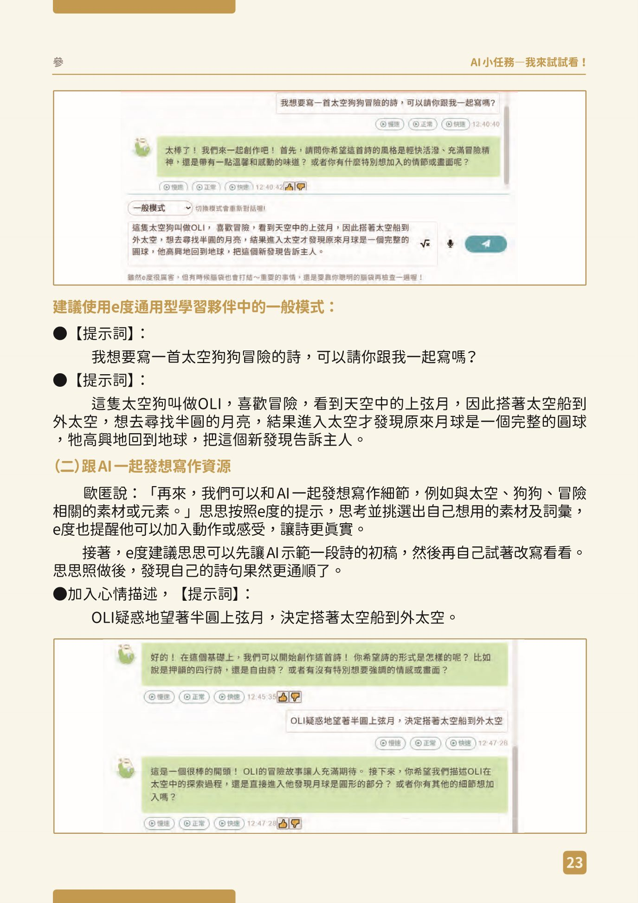
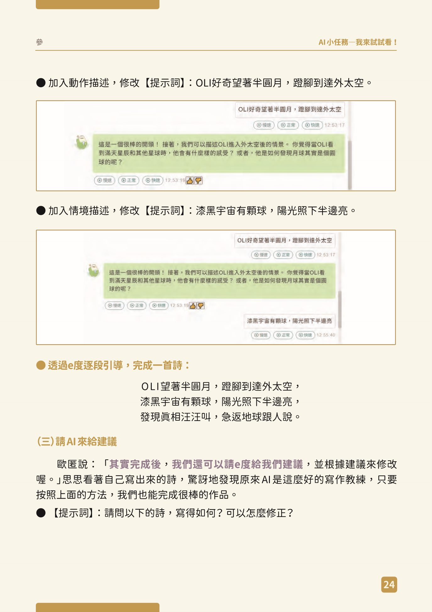
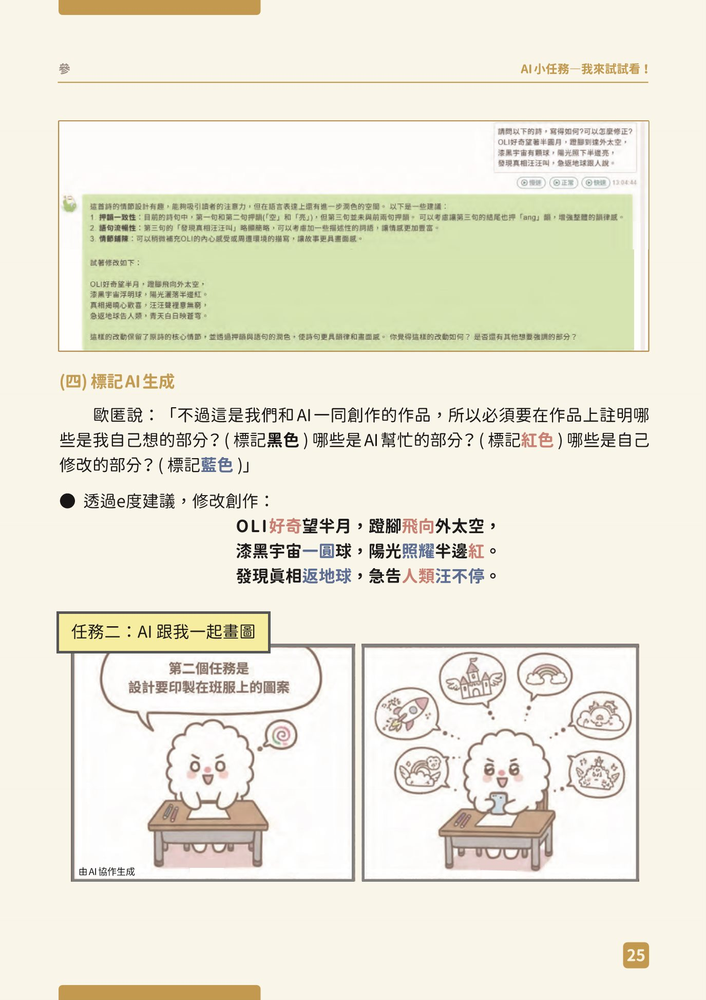

手冊的提問六招
AI 看不到我們在想什麼，所以得把「我們在哪、卡在哪、想要什麼」講出來，它才幫得上忙。

評審最看重的 30%，就是看你會不會問、會不會再問一句。下面六招都出自手冊。每一招都有手冊的例子（灰色，只能看）和框架（可以複製，把〔 〕換成你自己的內容）。
不要整句照抄！全班的 e度 對話紀錄都會被評審看到。如果每個人都打一模一樣的句子，評審會看不出是你在想。先看懂「為什麼這樣問」，〔 〕填你自己的內容，句子也可以照你說話的習慣改。
換句話說練習（老師口頭帶）
原理一樣，說法可以很多種。下面四句不是賀卡的題目，只用來練習：先說出「這句為什麼這樣問」，再用自己的話說一次。老師還沒說開始前，先不要打開答案。
想一想：這句話的原理是什麼？不改意思，你會怎麼換成自己的話說？
老師帶完再打開：兩種換法
想一想：這句話的原理是什麼？不改意思，你會怎麼換成自己的話說？
老師帶完再打開：兩種換法
想一想：這句話的原理是什麼？不改意思，你會怎麼換成自己的話說？
老師帶完再打開：兩種換法
想一想：這句話的原理是什麼？不改意思，你會怎麼換成自己的話說？
老師帶完再打開：兩種換法
記住：留下原理（說清楚、先引導、給選擇、追問），換掉句子（用你自己的語氣、你自己的事）。
請你扮演一位國語老師，幫我出 5 題關於「靜夜思」這首詩的選擇題
請你當作文老師，幫我的作文提出修改意見
我是小學五年級，作文題目是「我的好朋友」。我想寫我和阿明一起打球的事，可以先幫我列出可以寫的幾個重點嗎？我自己來寫內容。
這裡我還是不懂，可以換個更簡單的說法，或舉一個生活中的例子嗎？
你確定嗎？可以說明你的理由嗎？我要怎麼查證這是對的？
可以用蘇格拉底法引導我思考嗎？不要直接告訴我答案。
先不要給我完整答案，請給我「下一步的提示」就好，我想自己試試看
請用「表格」的方式幫我列出作文四段的大綱
推薦我 3 本適合的書，並各用一句話說明為什麼推薦
請問以下的詩，寫得如何？可以怎麼修正？手冊也提醒：
最終還是要由我們自己來判斷要不要修改
進階技巧（六招用熟了再打開，挑 1～2 招就好）
問之前：把需求弄清楚
拿到結果後：比較和挑毛病
查證和整理：對自己負責
進階技巧 A～I 參考 Anthropic 公司給大人看的官方提示指南。這些方法在 e度 一樣能用；比賽只能用 e度。
文思精靈：讓 e度 問你問題，把記憶挖深
影片：因材網 e度 官方「通用型學習夥伴－文思精靈」（1 分 18 秒）
照著做
- 換成「文思精靈」模式e度 左下角的模式選單。
- 說你想寫什麼樣的事只說稱謂和發生的事，例如「和家人一起做的一件事」。
- 請它先問你問題用下面的框架。
- 回答它，記下新想到的細節寫在下面的格子。
文思精靈是幫你想起來，不是幫你編出來。它給的點子，不是真的發生過的就不要用。
自己寫草稿，再請寫作精靈給建議

1 自己想主題和感覺p.22
2 和 AI 一起想素材p.23
3 請 AI 給建議p.24
4 標記 AI 生成p.25不可以讓 e度 整篇幫你寫。手冊 陸 p.53 把「整篇代寫」列為紅燈（絕對不能用）。文字是你的，評審也最看重這一點。
我的主題卡（第 1 節寫的）
- 回憶
- 那一刻
- 我的感想
- 想感謝
- 創作理念
還沒有主題卡？先填好最上面的年級、班級、座號，再按右上的按鈕；如果還是空的，回第 1 節寫主題卡。
邊看這張卡，邊寫下面的草稿。
1. 先自己寫草稿（不要先問 AI）
在文件「二、感謝文字」下面寫。大約 4～8 句，不用太長。把主題卡的「回憶」和「那一刻」的畫面寫進去。需要的話，複製下面的格式貼進去：
二、感謝文字（第 2 節） 【第 1 版：我自己寫的草稿】 【我想起的新細節（和文思精靈討論）】 【第 2 版：和 e度 討論後，我自己改的】
影片：因材網 e度 官方「通用型學習夥伴－寫作精靈」（19 秒）
2. 換「寫作精靈」，請它只給建議
手冊的寫作精靈第四步就是：請你當作文老師，幫我的作文提出修改意見。
（伍 p.41）
貼草稿前再檢查一次：裡面有沒有任何人的全名？有的話先改成稱謂。
3. 寫下修改版（第 2 版）
看了 e度 的建議，用自己的話改，寫在文件的第 2 版。哪些字詞是 e度 建議的、哪些是你自己改的，先記在心裡，第 4 節要把它寫成歷程紀錄。
今天的成果
今天要放進文件的
你的文件「二、感謝文字」裡，應該有第 1 版草稿、新細節、第 2 版。打開文件，確認都在，再按繳交。
我今天用了哪幾招？
第 5 節寫說明書「學到了什麼」時會用到。
回家任務
把第二版小聲念一遍，念起來卡卡的地方自己改。